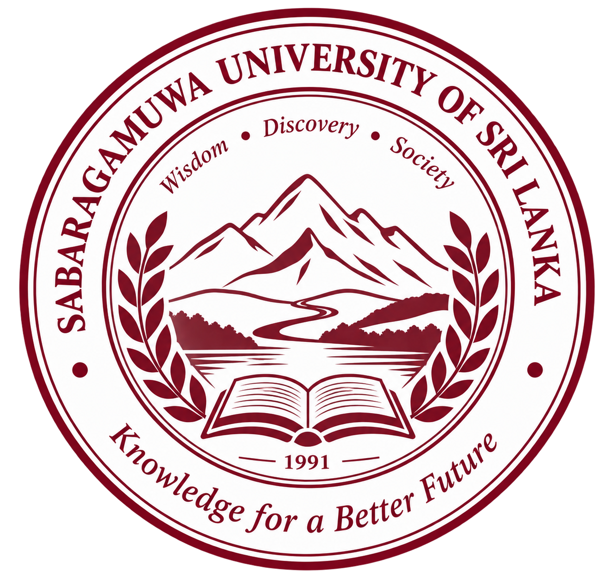
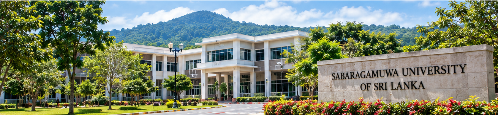

Sabaragamuwa University of Sri Lanka (SUSL) is a leading higher education
institution committed to academic excellence, research and community development.
We provide a dynamic learning environment that empowers students to achieve
their goals and make a positive impact on society.
Our university promotes knowledge, innovation and lifelong learning to create a better and more sustainable future for all.
“To be a nationally and internationally recognized university that creates knowledge and opportunities for a prosperous society.”
| Programme | Duration | Study Mode |
|---|---|---|
| BSc in Information Technology | 4 Years | Full Time |
| BSc in Computer Science | 4 Years | Full Time |
| BSc in Business Management | 4 Years | Full Time |
| BSc in Applied Sciences | 4 Years | Full Time |
| MSc in Information Technology | 2 Years | Part Time |
🖂 Email: info@sab.ac.lk
🕿 Telephone: +94 45 228 0014
Address: P.O. Box 02, Belihuloya, Sri Lanka
Visit our official website to get more information about admissions, research, student life and upcoming events.